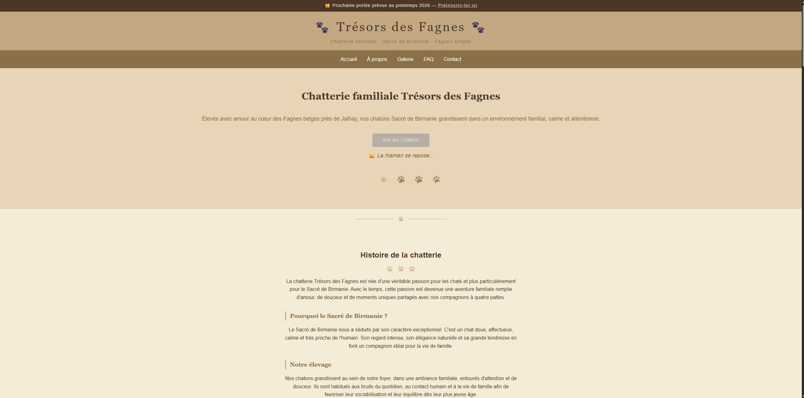

Mes projets
Voici quelques projets réalisés dans le cadre de mon apprentissage du développement web et de ma progression vers un profil professionnel.

Site Photographe
Projet d'apprentissage HTML/CSS réalisé avec OpenClassrooms, pour pratiquer la structure d'une page web, la mise en forme et les bases du responsive design.

Trésors des Fagnes
Projet web complet imaginé pour une chatterie spécialisée dans le Sacré de Birmanie, avec galerie interactive, FAQ, présentation et formulaire de contact.
Portfolio développeur
Site portfolio personnel conçu pour présenter mon parcours, mes compétences et mes projets web dans une interface moderne et responsive.
Compétences
HTML
Bases solides en progressionStructure des pages web, balises sémantiques, formulaires.
CSS
Pratique régulièreMise en page, animations, responsive design, variables CSS.
JavaScript
Montée en compétencesPremiers pas dans la programmation web interactive.
Git & GitHub
Utilisation pratiqueVersionnement du code, commits, push et déploiement via GitHub Pages.
Outils IA
Utilisation régulièreSupport pédagogique pour analyser le code et progresser plus vite.
À propos
Je suis Arnaud Adam, actuellement en reconversion vers le développement web.
Je me forme de manière autonome à travers des ressources d'apprentissage comme OpenClassrooms, des projets concrets et une pratique régulière du code.
J'utilise également l'intelligence artificielle comme outil pédagogique, principalement Claude, pour m'aider à comprendre certains concepts, analyser mes erreurs, corriger mon code et progresser plus efficacement.
Mon objectif n'est pas simplement de générer du code, mais de comprendre comment les choses fonctionnent réellement afin de développer des bases solides en développement web.
À terme, j'aimerais également intégrer l'intelligence artificielle dans la conception de sites web, afin d'imaginer des expériences plus utiles, plus interactives et mieux adaptées aux besoins des utilisateurs.
Ce portfolio reflète mon évolution, ma motivation et ma volonté d'apprendre sérieusement ce métier.
Contact
Vous souhaitez échanger, suivre mon évolution ou simplement entrer en contact ? N'hésitez pas à me laisser un message.
contact@a-adam.be